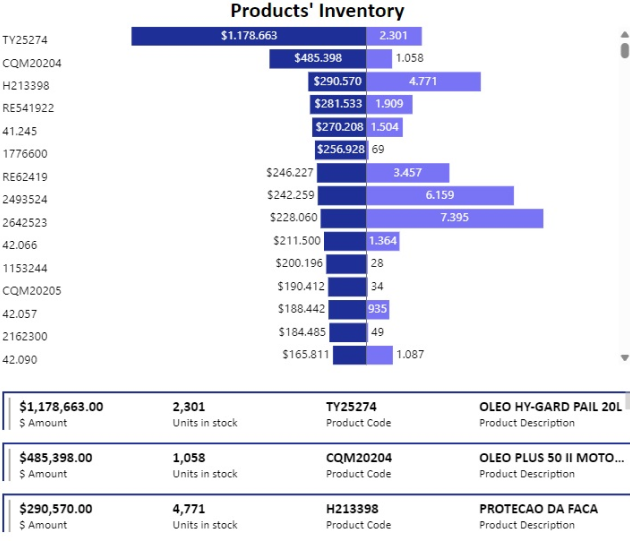
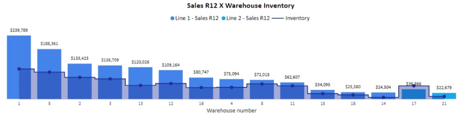

10+ years of experience in positively influencing processes and developing data-driven solutions.
Central California — The person who grew these was located in Central California and, er, hopefully very well-compensated.
 Project 1: Mapping Product Inventory in Retail Stores
Developed a tool to identify inventory quantities and monetary values, aiding key stakeholders in making
go-to-market decisions and asset turnover strategies.
Extracted over 100,000 data lines from
various sources.
Cleaned and manipulated data using DAX techniques to generate new features.
Created
data visualizations using Power BI.
Data passionate professional, with proven results in business solutions.
Project 2: Order Fulfillment Lead Time Analysis
Developed a tool to track the duration of customer service ticket resolution, providing stakeholders with
insights to enhance customer experience and improve service at outlets.
Analyzed over 400,000 lines
of data from a SQL-based Data Warehouse server.
Cleaned data, imported new visualization models,
and applied data manipulation techniques to identify key performance indicators.
Created data
visualizations using Power BI, with daily updates.
The objective of this project is to measure the performance of each workshop technician, providing crucial
insights into the time required to complete mechanical services. The analysis results assist managers in
optimizing tools, resources, and workforce allocation.
Employee information is collected through
forms, while additional data is sourced from the ERP (Enterprise Resource Planning) system. Both sources are
integrated using automation to generate outputs automatically and update the dashboard.
Designed
data forms and standards, imported new visualization models, and applied data manipulation techniques to
generate performance indicators.
Created data visualizations using Power BI, with daily updates.